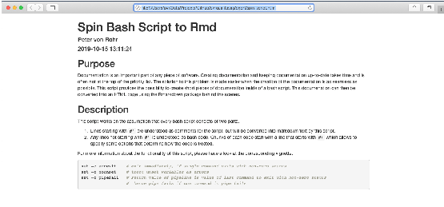

The function spin_sh() is the analoguous function to
knitr::spin() but for bash scripts. That means the function
spin_sh() takes a specially formatted bash script and
converts it into a literate programming document. Normal text that
contains the documentation of the bash script should be written after
the roxygen comment (#') and code chunks should start with
a code chunk option line which is written after #+.
The function spin_sh() separates the text from the code
chunks and converts the bash script into a Rmarkdown (Rmd) document.
When specified by the function parameter pb_knit, the Rmd
is rendered into a static HTML page. In contrast to
knitr::spin(), the bash code chunks must start with a chunk
option line that starts with #+, otherwise code chunks are
not recognized correctly. By default, the option eval=FALSE
is set for every chunk, except the option is explicitly assigned with a
given value.
The only argument that must be specified for spin_sh()
is the name of a bash script that contains the special formatting
described in the previous section.
spin_sh(ps_sh_hair = system.file('bash', 'spin_script.sh', package = 'qgert'))The above function call takes the bash-script
spin_script.sh converts it into a Rmarkdown file with the
name spin_script.Rmd and then renders the Rmd source to a
static HTML page stored in spin_script.html. The name of
the output file can be specified with the argument
ps_out_rmd. Options pb_knit and
ps_out_rmd determine whether the Rmd source should be
rendered to an HTML page and whether the Rmd source file should be kept
or not.
The result of calling spin_sh() as shown above is a
static HTML page which shows documentation and code chunks together
formatted in a way that users of the rmarkdown and the
knitr packages are familiar with. A screenshot of the
output file is shown below.

The original function knitr::spin() has many options and
features which are not ported to spin_sh(). As an example,
spin_sh() provides only two output format options (html and
pdf) which can be determined with the additional parameter
pobj_output_format which is directly passed to
rmarkdown::render(). The functionality of
spin_sh() can also be used from the bash script called
spin_script.sh which is used in the test output above. The
options required by spin_sh() are taken from commandline
options where
-s <input_file> specifies the bash input
file-o <output_file> specifies the name of the output
file-f <output_format> specifies the output
format.Only the first options must be specified.
sessioninfo::session_info()
#> ─ Session info ───────────────────────────────────────────────────────────────
#> setting value
#> version R version 4.2.0 (2022-04-22)
#> os macOS Monterey 12.3.1
#> system aarch64, darwin20
#> ui X11
#> language en
#> collate en_US.UTF-8
#> ctype en_US.UTF-8
#> tz Europe/Zurich
#> date 2022-06-27
#> pandoc 2.17.1.1 @ /Applications/RStudio.app/Contents/MacOS/quarto/bin/ (via rmarkdown)
#>
#> ─ Packages ───────────────────────────────────────────────────────────────────
#> package * version date (UTC) lib source
#> bslib 0.3.1 2021-10-06 [2] CRAN (R 4.2.0)
#> cachem 1.0.6 2021-08-19 [2] CRAN (R 4.2.0)
#> cli 3.3.0 2022-04-25 [2] CRAN (R 4.2.0)
#> desc 1.4.1 2022-03-06 [2] CRAN (R 4.2.0)
#> digest 0.6.29 2021-12-01 [2] CRAN (R 4.2.0)
#> evaluate 0.15 2022-02-18 [2] CRAN (R 4.2.0)
#> fastmap 1.1.0 2021-01-25 [2] CRAN (R 4.2.0)
#> fs 1.5.2 2021-12-08 [2] CRAN (R 4.2.0)
#> highr 0.9 2021-04-16 [2] CRAN (R 4.2.0)
#> htmltools 0.5.2 2021-08-25 [2] CRAN (R 4.2.0)
#> jquerylib 0.1.4 2021-04-26 [2] CRAN (R 4.2.0)
#> jsonlite 1.8.0 2022-02-22 [2] CRAN (R 4.2.0)
#> knitr 1.39 2022-04-26 [2] CRAN (R 4.2.0)
#> magrittr 2.0.3 2022-03-30 [2] CRAN (R 4.2.0)
#> memoise 2.0.1 2021-11-26 [2] CRAN (R 4.2.0)
#> pkgdown 2.0.5 2022-06-23 [2] CRAN (R 4.2.0)
#> purrr 0.3.4 2020-04-17 [2] CRAN (R 4.2.0)
#> qgert * 0.10.0 2022-06-27 [1] local
#> R6 2.5.1 2021-08-19 [2] CRAN (R 4.2.0)
#> ragg 1.2.2 2022-02-21 [2] CRAN (R 4.2.0)
#> rlang 1.0.2 2022-03-04 [2] CRAN (R 4.2.0)
#> rmarkdown 2.14 2022-04-25 [2] CRAN (R 4.2.0)
#> rprojroot 2.0.3 2022-04-02 [2] CRAN (R 4.2.0)
#> rstudioapi 0.13 2020-11-12 [2] CRAN (R 4.2.0)
#> sass 0.4.1 2022-03-23 [2] CRAN (R 4.2.0)
#> sessioninfo 1.2.2 2021-12-06 [2] CRAN (R 4.2.0)
#> stringi 1.7.6 2021-11-29 [2] CRAN (R 4.2.0)
#> stringr 1.4.0 2019-02-10 [2] CRAN (R 4.2.0)
#> systemfonts 1.0.4 2022-02-11 [2] CRAN (R 4.2.0)
#> textshaping 0.3.6 2021-10-13 [2] CRAN (R 4.2.0)
#> xfun 0.31 2022-05-10 [2] CRAN (R 4.2.0)
#> yaml 2.3.5 2022-02-21 [2] CRAN (R 4.2.0)
#>
#> [1] /private/var/folders/mb/t7z5vr594bq1hfpqyzhmpwpr0000gp/T/RtmpfgO0Dc/temp_libpath1284259e16bf3
#> [2] /Library/Frameworks/R.framework/Versions/4.2-arm64/Resources/library
#>
#> ──────────────────────────────────────────────────────────────────────────────